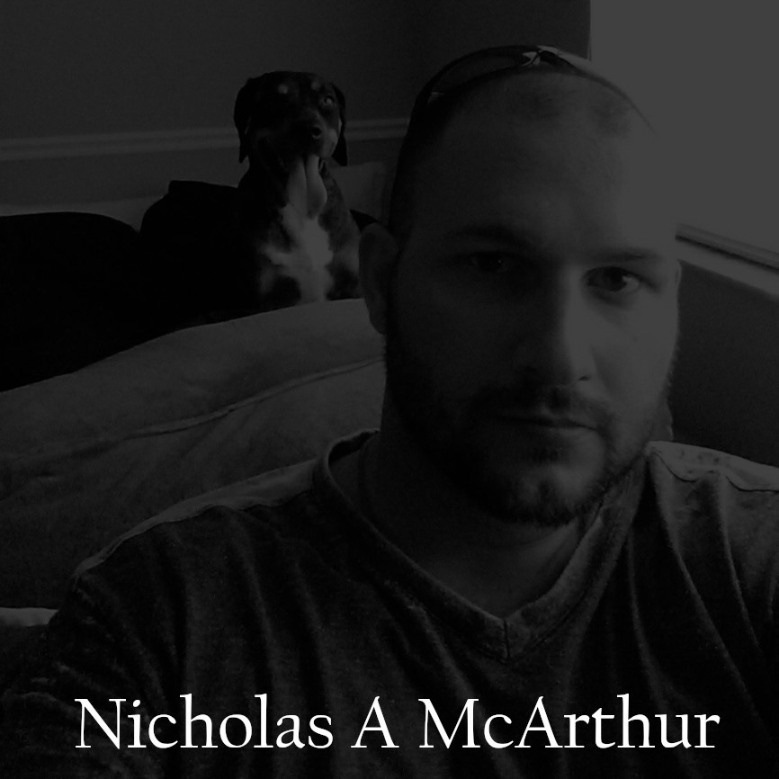

Thank you for taking the time to visit my site. I am motivated web developer who greatly enjoys being creative and challenged. I've lived in many different places and have worked in a variety of professions. I'm excited to bring my life experience to the process of building functional and phenomenal websites.
Career Goals:
To obtain an a position with a leading technology based company which provides the opportunity to expand my knowledge and explore career options in website and software development.
Self-motivated and dedicated individual willing to assist in the general activities of an organization. Looking forward to gaining an entry to serve the company and broaden my experience level for future benefits.

I've worked as a professional Bio-medical technician and Corpsman in the US Navy and am a life-long learner who's always interested in expanding my skills and knowledge base and pushing myself forward.
I am adaptable, reliable, and calm under pressure; able to work productively and efficiently both independently and as part of a team; dedicated to contributing to the success of the organization; encourages growth from other employees while promoting critical thinking.
Thank you for taking the time to view my profile I look forward to hearing from you